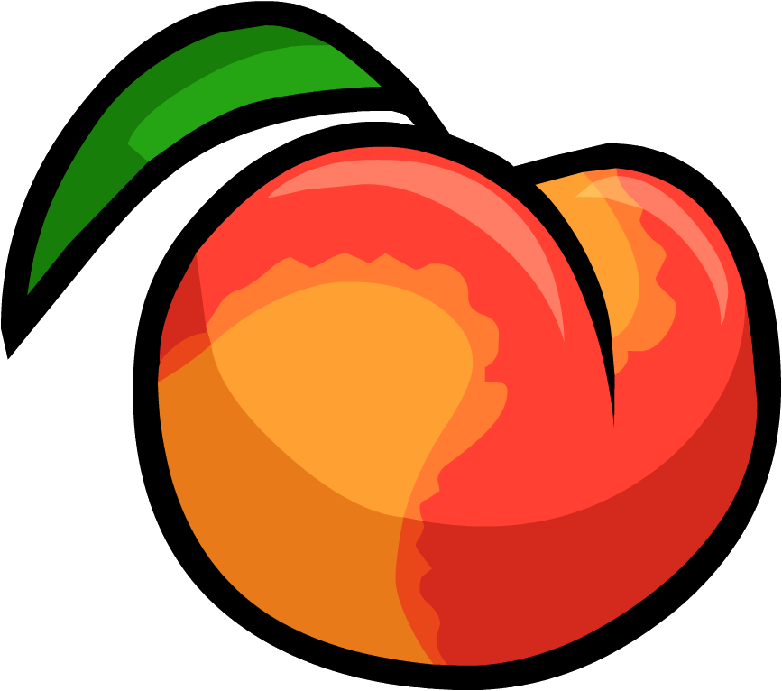
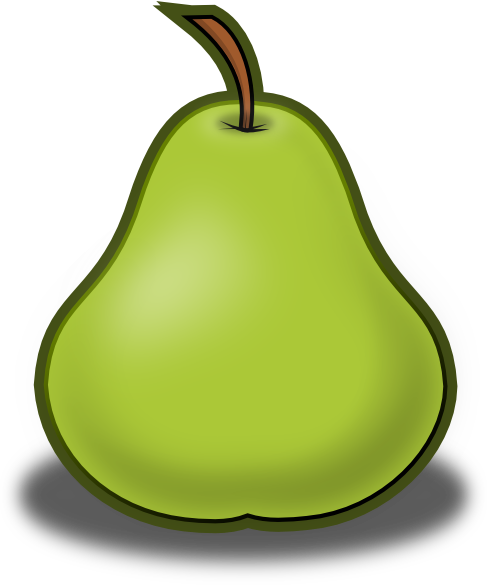

Fruits
One may choose from a long list of fruits. You should eat two to four servings daily of fruit. Please click on your favorite fruit to find its characteristics:
Banana
Apple
Peach
Pear
Bananas

Bananas have the following characteristics:
- Long thick-skinned edible fruit
- Yellow in color when ripe
- Can be eaten with one's fingers or cooked, fried, or deep-fried
- Is the most well-known and eaten tropical fruit
- Contain all the 8 amino-acids our body cannot produce itself
Apples

Apples have the following characteristics:
- Round fruit
- Green, red, or yellow skin when ripe
- Contains a lot of fiber
- Most types of apples contain a lot of vitamin C
Peaches

Peaches have the following characteristics:
- Round, juicy fruit with yellowish-red skin
- Must be picked ripe
- Can be kept 1-3 days
- Most peaches are peeled before eaten
Pears

Pears have the following characteristics:
- Sweet juicy yellow or green fruit with a rounded shape that becomes narrower toward the stalk
- Pears ripen best at room temperature
- Pears are good for the skin and contain plenty of fiber
- Pears are mostly eaten raw and taste great in desserts
Please see how important it is to have fruits in your diet!!
Please Return to Homepage!
Created by: Columbus Dong, August 2015